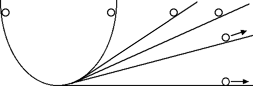

Leggi della dinamica
Primo principio della dinamica
La dinamica è una parte della meccanica che si occupa dello studio delle cause del moto. Il filosofo greco Aristotele nel IV secolo a.C. diede una prima spiegazione delle cause del moto: per mantenere una velocità costante un corpo deve essere sottoposto a una forza costante. Ad esempio, per spostare un tavolo attraverso una stanza dobbiamo applicare una forza costante al tavolo. Quindi, secondo Aristotele, una forza costante applicata a un corpo permette di mantenere costante la sua velocità.
Grazie alla plausibilità di questa descrizione del moto e all'autorità degli scritti di Aristotele, questa descrizione delle cause del moto è rimasta inalterata per circa 2000 anni fino ai tempi di Galileo Galilei che non aveva certo timori nello sfidare l'ipse dixit aristotelico:
Galileo partiva spesso nei suoi ragionamenti da alcuni esperimenti ideali che vogliamo andare a riproporre in questa sezione: supponiamo di considerare un corpo che si sta muovendo verso l'alto su un piano inclinato. Il corpo subisce una decelerazione, ossia la sua velocità diminuisce. Se invece il corpo scende lungo un piano inclinato subisce una accelerazione, ossia aumenta la sua velocità. Pertanto se consideriamo un corpo che si muove a una certa velocità su un piano orizzontale il ragionamento ci porta a concludere che il corpo non accelera e non decelera, ossia si muove a velocità costante, di moto rettilineo uniforme.
Un altro ragionamento simile che conduce alla stessa conclusione è il seguente. Supponiamo di avere un doppio piano inclinato, come nella figura sottostante e di lasciar cadere un corpo da una certa altezza: il corpo risalirà dalla parte opposta fino a raggiungere la stessa altezza. Se ora immaginiamo di abbassare il secondo piano inclinato avremo che il corpo risalirà ancora alla stessa altezza ma percorrendo uno spazio molto maggiore. Nel limite in cui il secondo piano diventa orizzontale il corpo continuerà a procedere a velocità costante.

Tramite questi esperimenti ideali Galileo arrivò ad enunciare il primo principio della dinamica: Un corpo persevera nel suo stato di quiete o moto rettilineo uniforme, a meno che non intervenga una causa (forza) esterna a modificarne lo stato. Il primo principio della dinamica è anche detto principio d'inerzia. L'inerzia è la proprietà che un corpo possiede di opporsi al cambiamento del suo stato di moto: è tanto maggiore quanto maggiore è la massa del corpo.
Da quanto abbiamo appena visto, il primo principio della dinamica ci dice che, quando nessuna forza agisce su un corpo, ossia quando F = 0, il corpo mantiene la sua velocità costante: se il corpo è fermo rimane fermo, se si muove a una certa velocità continua a muoversi con la stessa velocità. Possiamo perciò concludere che, diversamente da quanto sosteneva Aristotele, non è necessario continuare ad applicare una forza a un corpo per mantenerne costante la velocità.
Nella realtà gli esperimenti ideali di Galileo sono difficili da realizzare a causa delle forze d'attrito. Esistono però certi dispositivi, come il ghiaccio secco o la rotaia a cuscino d'aria, tramite i quali è possibile ridurre al massimo gli attriti e riprodurre con buona approssimazione gli esperimenti ideali di Galileo. In assenza di simili dispositivi la forza d'attrito tra il corpo e il piano orizzontale non è trascurabile e, se non vengono applicate altre forze, la velocità del corpo diminuisce. Anche in questo caso però, diversamente da quanto sosteneva Aristotele, la forza d'attrito non serve per mantenere costante la velocità del corpo ma comporta una variazione della sua velocità.